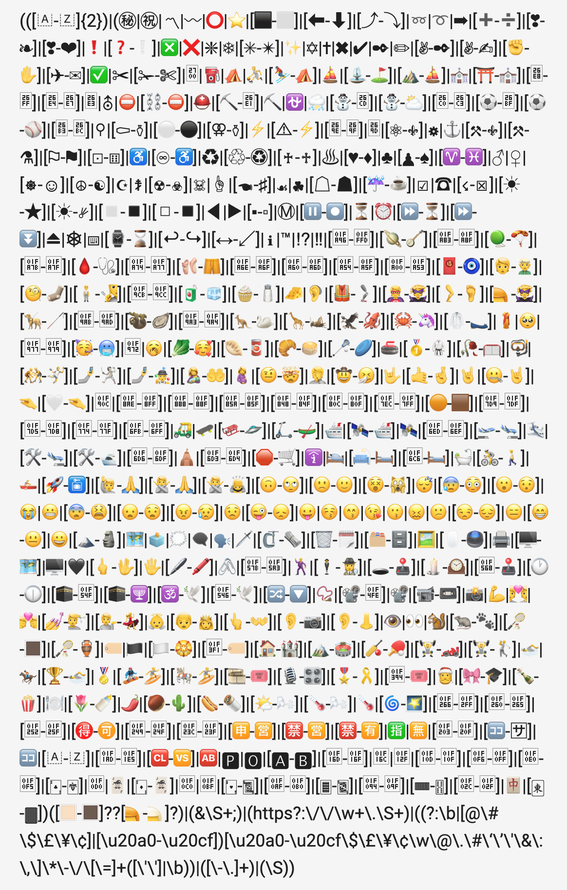

What’s the Story?
Language is humanity’s greatest social technology. While we’ve been communicating for thousands of years, it is only recently that we’ve begun sharing content online—posting selfies, searching for validation, and expressing our uninformed opinions in hot takes and quote tweets. Making sense of all that is being said is a tall order, best suited to a suite of algorithms. Computers can digest bits of language and help us describe, explain, and understand cultural phenomenon at the scale of human populations. The StoryWrangler instrument reflects our first step towards wrestling the day’s events into coherence. It is an approximate daily leaderboard for language popularity around the globe.
The Data
While most of our online activity is not broadcast publicly, the things we do choose to share are important, and worthy of careful enumeration. One prominent source for real-time global information is social media. Half of a billion messages are posted to Twitter every day! Written on post-it notes, they would wrap around the Earth’s equator in a neon hug full of politics, pop music, and sports.
At the Computational Story Lab, since 2008 we have collected a random 10% of all public messages using Twitter’s Decahose API. Overall, our collection comprises roughly 150 billion messages requiring 100TB of storage. Inspired by the Google n-grams project which smashes books into bits, we’ve meticulously parsed these tweets into daily frequencies of words, 2-word phrases, and three word expressions. Scientists call these different types “n-grams” for n = 1, 2, 3.
We’re able to categorize tweets into roughly 170 languages, but for now we’re simply combining them all into a single bag when tallying the votes. To explore how people are feeling, at the site for our flagship instrument hedonometer.org we use this same data to visualize daily sentiment in 9 languages. Importantly, this site offers visitors the opportunity to toggle retweets on and off, allowing for the inclusion or exclusion of social amplification. While we’re not able to share individual tweets, we do provide an API for exporting relative frequency data at the daily resolution. Source code associated with the API can be found here, and the pattern match used to parse tweets can be found here.
The Visualization
Sorting frequencies by popularity, we find some n-grams that appear very consistently in time. For example, “god” is roughly the 300th most commonly used word each day. Others rise and fall cyclicly. “Friday”, “New Year’s Eve”, and “Winter Olympics” spike every week, year, and four years respectively. For one glorious day in 2015, “😊” was the most commonly used word! Many many many more phrases appear very rarely.
The shapes of our collective attention are quite universal. Holiday mentions build exponentially to a crescendo before falling precipitously. Movies produce a more symmetric pattern centered on their release date. And mentions of individual years reliably plateau chronologically, with a volcanic rim bounded by their beginning and end.
We hope journalists, linguists, political scientists, and the extremely online alike are able to use this data to characterize collective attention in new and interesting ways. Have at it! And tell us if you have trouble.
Some of the many gory details
 Parsing tweets into components is harder than we expected, so we have a few specifics to share about how it is being done. Regarding the definition of an n-gram, 1-grams are bounded by spaces. 2-grams comprise a pair of 1-grams with a space between them. Punctuation is hard so we’ve left it in.
Our pattern match is restricted to n-grams containing at least one latin character or emoji. Hashtags and handles are in. URLs and carriage returns and other unicode trouble are out. The database is case sensitive, so if you’re looking for the popularity of playing card game “Trump suits”, you’ll want to use the lower case version “trump”.
For simplicity, and to avoid requiring atomic clocks with relativitistic space-time corrections, we use Eastern time in the US when assigning n-grams to a calendar day. Ranks are thresholded at 1 million, so if a phrase is less popular than this cutoff on an individual day, we don’t offer information on its prevalence. Provided the computers aren’t on 🔥🔥🔥, daily ranks will be updated within roughly 24-hours. Somewhat confusingly, more popular words have lower rank and rare words have large rank. Ranks are calculated within a single category of n-gram, so while you can plot “NSync” against “Backstreet Boys”, their relative rankings are computed against different collections.
Obligatory Warnings
As a reflection of global events, Twitter data is problematic for several reasons. “Tweets are a non-representative subsample of utterances made by a non-representative subsample of Earth&rsquo's population.” Pew surveys suggest only 1 in 5 adults Americans use the service. Our data reflects only a random 10% of messages. This means that for exceedingly rare words, while the frequencies reported here are roughly one tenth of the true values, the rankings are likely to be unreliable. We make no attempt to remove automated account activity, but selecting the “exclude retweets” option will likely reduce the contribution of coordinated bot behavior.
Attribution
If you use the data from our site in a scientific study, please cite it.
Related Publications
A few example studies we’ve undertaken recently using this data:
Contact
Share the interesting things you notice! Questions and comments can be sent to Jane.Adams@uvm.edu
Acknowledgements
The front end of the site was built by Jane Adams. The back end was built by Michael Arnold, Thayer Alshaabi, Josh Minot, and Andy Reagan. The project is lead by Peter Dodds and Chris Danforth, and their research group the Computational Story Lab at the University of Vermont. Several students have contributed including:
Sharon Alajajian, Nicholas Allgaier, Catherine Bliss, Eric Clark, Emily Cody, Ethan Davis, Todd DeLuca, Suma Desu, David Dewhurst, Danne Elbers, Kameron Decker Harris, Fletcher Hazlehurst, Sophie Hodson, Kayla Horak, Ben Emery, Mike Foley, Morgan Frank, Ryan Gallagher, Darcy Glenn, Sandhya Gopchandani, Kelly Gothard, Tyler Gray, Max Green, Laura Jennings, Dilan Kiley, Isabel Kloumann, Ben Kotzen, Paul Lessard, Ross Lieb-Lappen, Kelsey Linnell, Ashley McKhann, Andy Metcalf, Tom McAndrew, Sven McCall, Henry Mitchell, Lewis Mitchell, Kate Morrow, Eitan Pechenick, Michael Pellon, Aaron Powers, Andy Reagan, John Ring IV, Abby Ross, Lindsay Ross, Aaron Schwartz, Anne-Marie Stupinski, Matt Tretin, Lindsay Van Leir, Colin Van Oort, Brendan Whitney, and Jake Williams.
Funding for the project has been provided by the Vermont Complex Systems Center, MassMutual and the University of Vermont. Many thanks and acknowledgments go to these lovely people:
Alexa Woodward, Tim Raymond, Mike Austin, Jim Bagrow, Josh Bongard, Josh Brown, Jim Burgmeier, Melody Burkins, Kate Danforth, Andrea Elledge, Maggie Eppstein, Bill Gottesman, Laurent Hebert-Dufresne, John Kaehny, Jim Lawson, Juniper Lovato, Aimee Picchi, Andrew Reece, Tony Richardson, Taylor Ricketts, Melissa Rubinchuk, Brian Tivnan, John Tucker and Toph Tucker.
And as always, thank you for your tweets. They are mostly good.